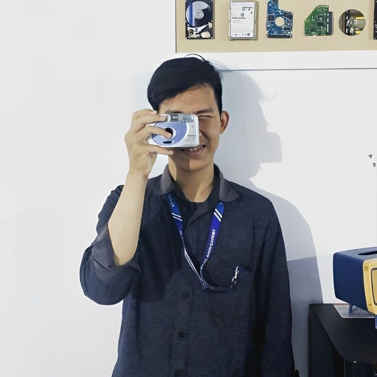
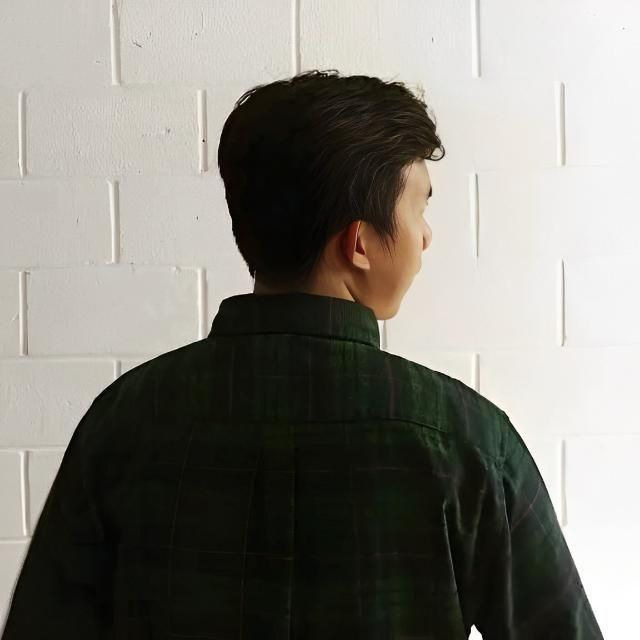
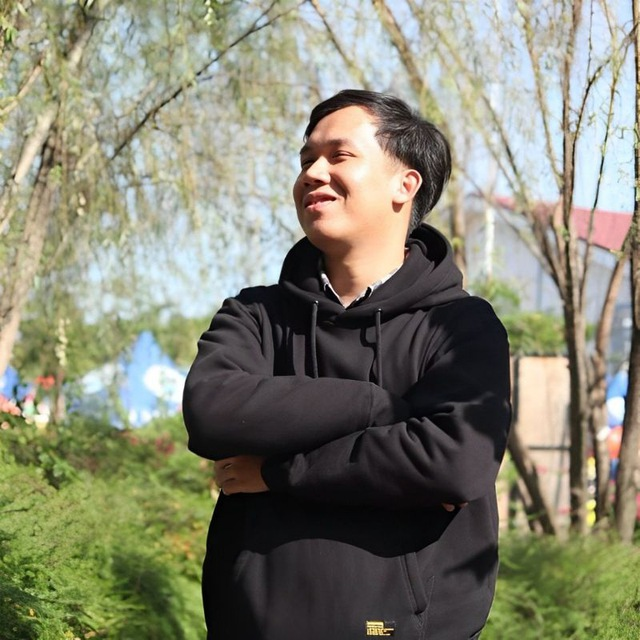
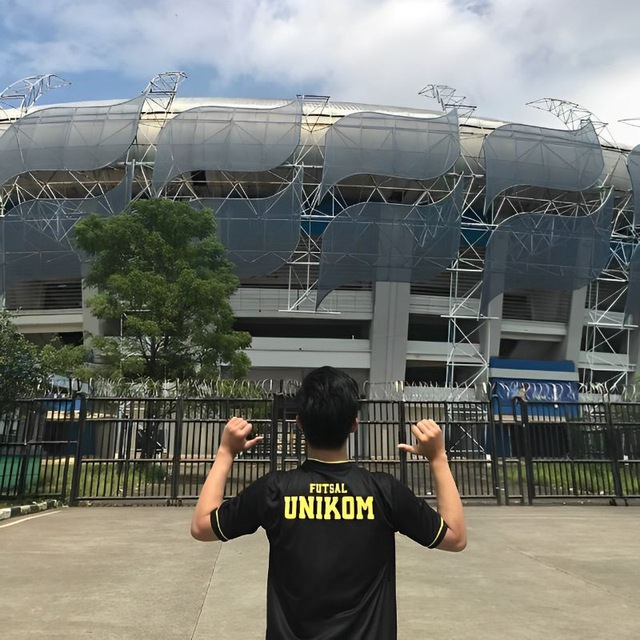
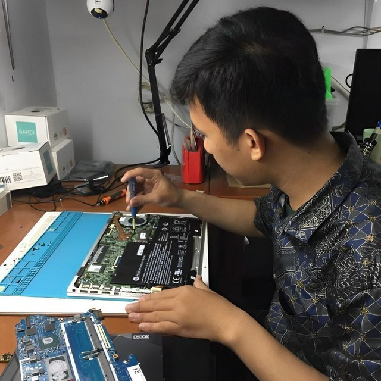
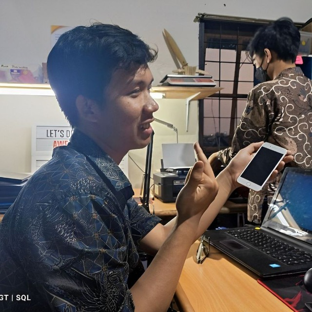
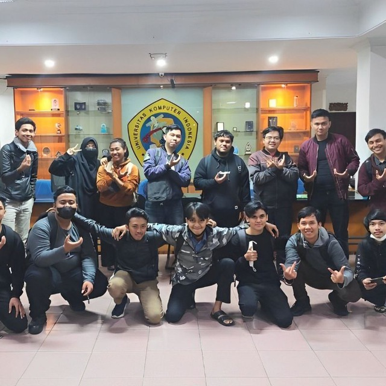

Tentang

Hai, saya Heri. Sebagai individu yang penuh semangat dan bertekad kuat, saya memiliki kesempatan untuk lulus dari SMKN 13 Bandung dengan gelar di bidang Teknik Komputer dan Jaringan pada tahun 2020. Selama studi di SMKN 13 Bandung, saya mengembangkan dasar yang kuat dalam sistem komputer dan arsitektur jaringan, termasuk keterampilan dalam merancang, mengelola, dan memecahkan masalah jaringan komputer. Saya juga aktif terlibat dalam berbagai proyek praktis yang memperkuat pemahaman saya tentang teknologi informasi dan aplikasinya dalam dunia nyata. Pengalaman ini tidak hanya membekali saya dengan pengetahuan teknis yang mendalam, tetapi juga mengajarkan pentingnya kerjasama tim dan komunikasi yang efektif dalam menyelesaikan tantangan teknologi.
Saat ini, saya sedang mengejar gelar Teknik Informatika di Universitas Komputer Indonesia (UNIKOM) yang bergengsi, di mana saya telah mengeksplorasi minat saya dalam teknologi sejak tahun 2021. Di UNIKOM, saya tidak hanya mempelajari sistem komputer dan pengembangan perangkat lunak, tetapi juga memperdalam pengetahuan saya dalam analisis data, kecerdasan buatan, dan keamanan siber. Selain itu, saya aktif berpartisipasi dalam berbagai kegiatan ekstrakurikuler dan komunitas teknologi, yang memungkinkan saya untuk memperluas jaringan profesional dan belajar dari para ahli di bidangnya. Dengan kombinasi dari pengetahuan akademis dan pengalaman praktis ini, saya sangat antusias untuk terhubung dengan para profesional yang memiliki minat yang sama dalam inovasi dan kolaborasi. Mari kita menjelajahi peluang untuk membentuk masa depan teknologi dan mendorong perubahan positif bersama!
Pendidikan

Universitas Komputer Indonesia
Gelar Sarjana, Teknik Informatika (Agu 2021 - Agu 2025)
Saya sedang mengejar gelar Sarjana di bidang Teknik Informatika di Universitas Komputer Indonesia (UNIKOM), dengan periode studi dari Agustus 2021 hingga Agustus 2025. Selama masa studi ini, saya telah mempelajari berbagai aspek penting dalam informatika, termasuk sistem komputer, pengembangan perangkat lunak, analisis data, kecerdasan buatan, dan keamanan siber. Di UNIKOM, saya juga aktif terlibat dalam berbagai kegiatan ekstrakurikuler dan komunitas teknologi, yang telah memperluas jaringan profesional saya serta memberikan kesempatan untuk belajar dari para ahli di bidangnya. Universitas ini berlokasi di Jl. Dipati Ukur No.112-116, Kecamatan Lebakgede, Kecamatan Coblong, Kota Bandung, Jawa Barat 40132.
SMKN 13 Kota Bandung
Computer Network Engineer, Teknik Komputer & Jaringan (Jul 2017 - Apr 2020)
Selama periode Jul 2017 hingga Apr 2020, saya menempuh pendidikan di SMKN 13 Bandung di bidang Teknik Komputer & Jaringan. Di sekolah ini, saya mendalami ilmu komputer dan jaringan serta memperoleh pengetahuan yang luas tentang arsitektur sistem komputer, manajemen jaringan, dan pemecahan masalah teknis. Selama studi saya, saya berhasil mencapai Indeks Prestasi Kumulatif (IPK) sebesar 82. Sekolah ini terletak di Jl. Soekarno Hatta No. KM. 10, Jatisari, Kecamatan Buahbatu, Kota Bandung, Jawa Barat 40286.
SMP Mekar Arum Kab. Bandung
Junior High School, Private Junior High School (Jul 2014 - Jul 2017)
Pada periode Jul 2014 hingga Jul 2017, saya menyelesaikan pendidikan jenjang SMP di SMP Mekar Arum Kabupaten Bandung. Di sekolah swasta ini, saya memperoleh dasar-dasar pendidikan yang kokoh dan beragam pengetahuan dalam berbagai mata pelajaran. Saya berhasil menyelesaikan program studi ini dengan baik. SMP Mekar Arum Kabupaten Bandung terletak di Jl. Raya Cinunuk No. 82, Cibiru Wetan, Kecamatan Cileunyi, Kabupaten Bandung, Jawa Barat 40624.
SDN Mekar Biru Kab. Bandung
Elementary School, Public Elementary School (Jun 2008 - Jun 2014)
Saya menyelesaikan pendidikan dasar di SDN Mekar Biru Kabupaten Bandung pada periode Jun 2008 hingga Jun 2014. Di sekolah dasar ini, saya memperoleh dasar-dasar pendidikan yang kokoh serta membangun fondasi yang kuat dalam belajar. Saya berhasil menyelesaikan program studi ini dengan baik. SDN Mekar Biru Kabupaten Bandung terletak di Jl. Cibiru Hilir, Cibiru Wetan, Kecamatan Cileunyi, Kabupaten Bandung, Jawa Barat 40626.
Pengalaman
Selama empat tahun terakhir, saya telah memperoleh pengalaman kerja yang beragam di berbagai bidang, mulai dari IT Support dan Data Entry, hingga manajemen inventaris, pemasaran digital, dan penjualan. Saya juga memiliki keterampilan dalam teknisi komputer dan laptop, serta menjadi seorang petugas media sosial. Pengalaman ini telah memperkaya pengetahuan dan keterampilan saya di berbagai aspek pekerjaan, memungkinkan saya untuk menjadi seorang profesional yang beradaptasi dengan cepat dan efisien dalam lingkungan kerja yang dinamis. Saya percaya bahwa kombinasi keterampilan dan pengalaman saya dapat memberikan kontribusi yang berharga bagi tim dan organisasi di masa mendatang.
Laptoppu.id (Jan 2024 - Des 2024)

Sebagai Teknisi Komputer & Laptop Freelancer
Memanfaatkan keahlian teknis untuk memperbaiki laptop, menangani berbagai masalah mulai dari kerusakan ringan hingga sedang. Melakukan berbagai layanan termasuk penggantian suku cadang, peningkatan, pembersihan, repasting CPU/VGA, penginstalan ulang, dan penginstalan kustom aplikasi. Memiliki kemampuan dalam pemecahan masalah yang kuat, mendiagnosis dan menyelesaikan masalah teknis yang kompleks dengan presisi dan efisiensi. Terbukti mampu bekerja secara efektif dengan berbagai model laptop dan sistem operasi, memastikan penyelesaian tepat waktu dan efektif terhadap kekhawatiran pelanggan.
CV. Trimitra Jaya Mandiri (Des 2022 - Des 2024)

Sebagai Staff Social Media Officer
Mengembangkan dan menerapkan strategi media sosial komprehensif yang sejalan dengan tujuan organisasi, selalu berada di depan dengan menganalisis tren dan perkembangan terbaru di media sosial. Mengelola dan memelihara akun media sosial perusahaan di berbagai platform, termasuk Instagram, Facebook, TikTok, Tokopedia, Shopee, dan lainnya, memastikan postingan tepat waktu dan efektif, merespons pengikut dan pelanggan, serta membangun keterlibatan online yang kuat. Menciptakan dan mengkurasi konten yang menarik yang memperkuat kehadiran online perusahaan, termasuk mengembangkan kampanye kreatif dan konten efektif yang meningkatkan keterlibatan pengguna. Melakukan penelitian tentang tren industri, pesaing, dan topik yang sedang tren di media sosial, mengidentifikasi peluang untuk tetap unggul dalam persaingan dan meningkatkan visibilitas merek perusahaan.
PT. Teknologi Solusi Mulai dari Ringan (Okto 2020 - Okto 2022)

1. Sebagai Staff Teknisi Komputer & Laptop
Memanfaatkan keahlian teknis untuk memperbaiki laptop, menangani berbagai masalah mulai dari kerusakan ringan hingga sedang. Melakukan berbagai layanan termasuk penggantian suku cadang, peningkatan, pembersihan, repasting CPU/VGA, penginstalan ulang, dan penginstalan kustom aplikasi. Menunjukkan keterampilan pemecahan masalah yang kuat, mendiagnosis dan menyelesaikan masalah teknis yang kompleks dengan presisi dan efisiensi. Kemampuan terbukti untuk bekerja secara efektif dengan berbagai model laptop dan sistem operasi, memastikan penyelesaian tepat waktu dan efektif terhadap kekhawatiran pelanggan.
2. Sebagai Staff Digital Marketing & Sales
Memanfaatkan keahlian dalam pemasaran digital untuk memperluas kehadiran pasar di media sosial dan platform perdagangan online, termasuk Tokopedia, Shopee, BukaLapak, OLX, Facebook, dan Instagram. Menunjukkan keterampilan komunikasi yang kuat dengan merespons dengan cepat pertanyaan pelanggan dan obrolan tindak lanjut dari platform perdagangan online, memastikan penyelesaian tepat waktu dan efektif terhadap kekhawatiran pelanggan. Menciptakan konten digital yang menarik untuk platform media sosial, merancang pesan yang menarik bagi audiens target dan mendorong konversi. Kemampuan terbukti untuk memanfaatkan saluran digital untuk meningkatkan penjualan, meningkatkan kesadaran merek, dan membangun hubungan yang kuat dengan pelanggan.
3. Sebagai Staff Inventory Management
Memanfaatkan keahlian dalam manajemen inventaris untuk memposting barang dan suku cadang laptop secara efisien ke berbagai marketplace, termasuk Tokopedia, Shopee, BukaLapak, OLX, Facebook, dan Instagram. Berhasil mencari dan membeli RAM, HDD, SSD, dan suku cadang untuk pengisian ulang dan permintaan konsumen, memastikan pengisian inventaris tepat waktu dan akurat. Menunjukkan keterampilan organisasi dan analitis yang kuat dalam mengelola tingkat inventaris, melacak pergerakan stok, dan mengoptimalkan logistik untuk memastikan pengiriman produk yang lancar kepada pelanggan.
Universitas Padjadjaran (Jul 2019 - Sep 2019)

Sebagai IT Support & Data Entry
Selama menjadi magang di Universitas Padjadjaran FKG, saya telah mengembangkan keterampilan dalam merawat komputer kantor dan melakukan perbaikan perangkat lunak. Keterampilan ini meliputi menginstal ulang perangkat lunak untuk menyelesaikan masalah dan memastikan bahwa semua aplikasi yang diperlukan berfungsi dengan baik. Saya juga terampil dalam memperbaiki printer dengan mengganti kartrid tinta dan menangani masalah umum yang muncul. Selain itu, saya memiliki pengalaman dalam melakukan entry data, dengan akurasi dan efisiensi memasukkan informasi ke dalam berbagai sistem.
Kombinasi keterampilan teknis dan pengetahuan memungkinkan saya untuk secara efektif mendukung operasi kantor dan berkontribusi pada kelancaran fungsi infrastruktur TI universitas. Oleh karena itu, saya dapat membantu memastikan bahwa sistem TI universitas berfungsi dengan baik dan efisien, memungkinkan staf dan mahasiswa untuk berkomunikasi dan berbagi informasi dengan efektif.
Sertifikasi

1. CCNA: Introduction to Networks
Cisco Certified Network Associate (CCNA): Introduction to Networks adalah kursus yang mendalam mengenai dasar-dasar jaringan. Kursus ini mencakup konsep-konsep penting dalam membangun, mengoperasikan, dan memecahkan masalah jaringan dasar. Dalam kursus ini, peserta belajar tentang arsitektur, fungsi, komponen, dan model jaringan Internet dan jaringan komputer lainnya. Materi meliputi pengenalan protokol jaringan, IP addressing, subnetting, routing, dan switching.
2. CCNA: Switching, Routing, and Wireless Essentials
Cisco Certified Network Associate (CCNA): Switching, Routing, and Wireless Essentials adalah kursus lanjutan yang membahas konsep-konsep penting dalam pengalihan (switching), perutean (routing), dan jaringan nirkabel (wireless). Kursus ini dirancang untuk memberikan pemahaman mendalam tentang cara mengonfigurasi dan mengelola perangkat jaringan untuk mendukung operasi jaringan yang efisien dan aman.
3. CCNA: Enterprise Networking, Security, and Automation
Cisco Certified Network Associate (CCNA): Enterprise Networking, Security, and Automation adalah kursus yang berfokus pada pengembangan keterampilan lanjutan dalam pengelolaan jaringan perusahaan, keamanan jaringan, dan otomatisasi jaringan. Kursus ini dirancang untuk memberikan pemahaman yang mendalam dan keterampilan praktis yang diperlukan untuk mengelola dan mengamankan infrastruktur jaringan skala besar di lingkungan perusahaan.